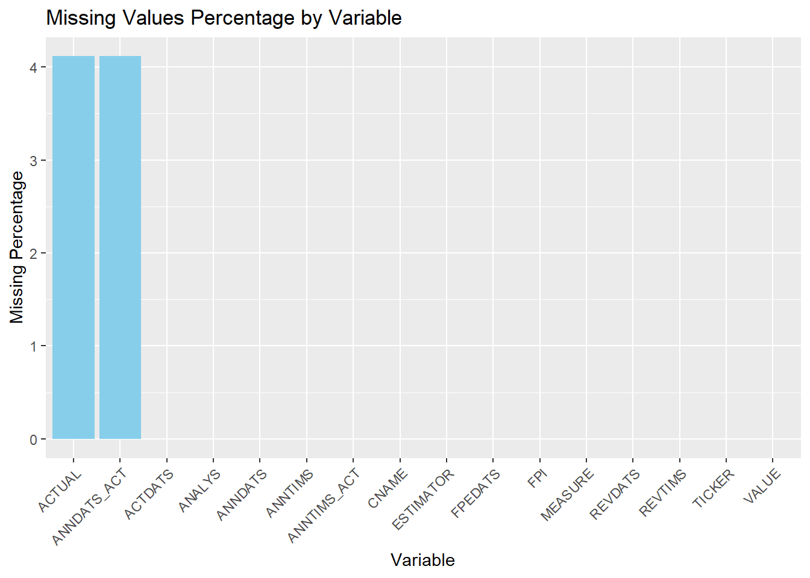
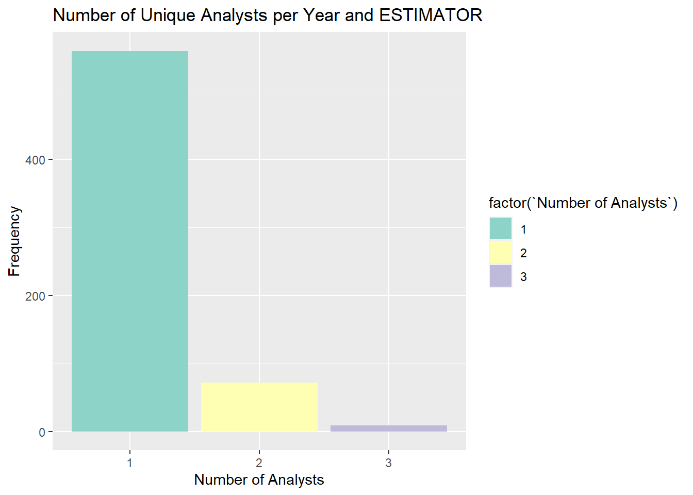

In this group project, you will work with analysts’ forecast data of earning per share (EPS) provided by Wharton Research Data Services (WRDS). Institutional Brokers’ Estimate System (I/B/E/S) provides historical data on certain financial indicators collected from thousands of individual analysts working in more than 3,000 broker houses.
TICKER: A unique identifier assigned to each security. In this group project, you will only model “NFLX” ticker.
CNAME: Company name
ACTDATS: The Activation date: It is the date when the analyst forecast became effective within the IBES database.
ESTIMATOR: Sellside institution (mostly broker house). It is just the broker.
ANALYS: The person who makes the forecast and work for sellside institution. Estimators and analysts are represented by codes to hide their real names.
FPI: Forecast Period Indicator: The forecasting period. 6: Next Fiscal Quarter 1: Next Fiscal Year
MEASURE: The variable being estimated. We have data for earning per share (EPS)
VALUE: The forecasted value of EPS
FPEDATS: The Forecast Period End Date: It is the ending date of the fiscal period to which the estimate applies. For the majority of companies, the FPEDATS date is December 31st of that year.
REVDATS: The Review Date: It is the most recent date on which IBES called the analyst and verified that particular estimate as still valid for that analyst. If an analyst confirms that a previous estimate is still valid, the original database record for that estimate is retained and only the REVDATS variable is updated. If an analyst changes their estimate for a given company, a new record is entered in the database with a new ANNDATS. The old record of the analyst (containing the previous estimate) is retained in the database.
REVTIMS: Time-stamp of REVDATS
ANNDATS: The Announce date: It is the date on which the analyst first made that particular estimate.
ANNTIMS: Time-stamp of ANNDATS
ACTUAL: The realized EPS, the true EPS value.
ANNDATS_ACT: The Announced date of Actual EPS: The actual EPS value is announced by the company at this date.
ANNTIMS_ACT: The time-stamp of ANNDATS_ACT
library(dplyr)
Attaching package: 'dplyr'
The following objects are masked from 'package:stats':
filter, lag
The following objects are masked from 'package:base':
intersect, setdiff, setequal, union
The first row in NFLX data set: On 09‐Aug-2002 (ANNDATS), analyst 6749 (ANALYS) at Estimator 1872 (ESTIMATOR) predicts that the EPS (MEASURE) for NETFLIX INC. (CNAME) with a ticker of NFLX (TICKER) with forecast period ending 30‐Sep-2002 (FPEDATS) is -$0.0086 (VALUE). This estimates was entered into the database on 12‐Aug-2002 (ACTDATS). On 17-Oct-2002 (ANNDATS_ACT), NETFLIX INC. announced an actual EPS of $7e-04 ($0.0007) (ACTUAL) for this quarter (FPI=6).
Check to see the missing values in NFLX dataset and calculate the percent missing for each variable in NFLX and list your findings in R object called NFLX_missingness. NFLX_missingness is a dataframe with two columns: The first column, Variable, stores the variable names and the second column, Missingness shows the percent missing in percentage points with two decimal points.
# Visualize missing valuesmissingness_plot <-function(data) { data_long <-gather(data, key ="Variable", value ="MissingPercentage")ggplot(data_long, aes(x =reorder(Variable, -MissingPercentage), y = MissingPercentage)) +geom_bar(stat ="identity", fill ="skyblue") +labs(title ="Missing Values Percentage by Variable", x ="Variable", y ="Missing Percentage") +theme(axis.text.x =element_text(angle =45, hjust =1))}# Generate and display missing values plotmissingness_plot(NFLX_missingness)

Task 1B: Data Manipulation
Conduct the following data manipulations on NFLX:
Drop rows from the data set when a variable has a missing value
Drop rows from the data set the quarterly forecasts (drop FPI=6)
Declare TICKER, CNAME, ESTIMATOR , ANALYS, FPI , and MEASURE variables as factor
Declare ACTDATS, FPEDATS , ANNDATS, REVDATS, ANNDATS_ACT as time variable.
Drop ANNTIMS_ACT, ANNTIMS , and REVTIMS
Create a new column named YEAR that captures the year in FPEDATS
Name your reduced dataset as NFLX1
Print out data structure and the summary of NFLX1
Your code for Task 1B
# Copy NFLX to NFLX1 without assigning data typesNFLX1 <- NFLX# Drop rows from the data set when a variable has a missing valueNFLX1 <- NFLX1 %>%na.omit()# Drop rows from the data set where FPI=6NFLX1 <- NFLX1 %>%filter(FPI !=6)# Drop ANNTIMS_ACT, ANNTIMS, and REVTIMSNFLX1 <- NFLX1 %>%select(-ANNTIMS_ACT, -ANNTIMS, -REVTIMS)# Create a new column named YEAR that is an exact copy of the data in FPEDATSNFLX1 <- NFLX1 %>%mutate(YEAR = FPEDATS)# Print out data structure and the summary of NFLX1str(NFLX1)
TICKER CNAME ACTDATS ESTIMATOR
Length:2603 Length:2603 Min. :20020805 Min. : 11
Class :character Class :character 1st Qu.:20101021 1st Qu.: 192
Mode :character Mode :character Median :20141009 Median : 899
Mean :20136831 Mean :1376
3rd Qu.:20180122 3rd Qu.:2502
Max. :20210119 Max. :4439
ANALYS FPI MEASURE VALUE
Min. : 1047 Min. :1 Length:2603 Min. :-0.150
1st Qu.: 71755 1st Qu.:1 Class :character 1st Qu.: 0.190
Median : 82010 Median :1 Mode :character Median : 0.430
Mean : 89534 Mean :1 Mean : 1.339
3rd Qu.:114459 3rd Qu.:1 3rd Qu.: 2.015
Max. :194536 Max. :1 Max. : 7.670
FPEDATS REVDATS ANNDATS ACTUAL
Min. :20021231 Min. :20021129 Min. :20020805 Min. :-0.005
1st Qu.:20101231 1st Qu.:20110120 1st Qu.:20101021 1st Qu.: 0.250
Median :20141231 Median :20141013 Median :20141009 Median : 0.430
Mean :20137082 Mean :20137740 Mean :20136830 Mean : 1.384
3rd Qu.:20181231 3rd Qu.:20180122 3rd Qu.:20180122 3rd Qu.: 2.680
Max. :20201231 Max. :20210119 Max. :20210119 Max. : 6.080
ANNDATS_ACT YEAR
Min. :20030115 Min. :20021231
1st Qu.:20110126 1st Qu.:20101231
Median :20150120 Median :20141231
Mean :20145973 Mean :20137082
3rd Qu.:20190117 3rd Qu.:20181231
Max. :20210119 Max. :20201231
Task 2: Calculate Number of Analysts and Brokerage Houses
Calculate the total number of unique analysts in NFLX1 dataset that provide forecasts each year and name your R object as NumberAnalyst
Calculate the total number of unique brokerage houses (ESTIMATOR) in NFLX1 dataset that provide forecasts each year and name your R object as NumberBrokerage
Need Written Response in this callout: In which year(s) we have the highest number of unique analysts providing forecasts for NFLX ticker? In which year(s), we have the highest number of unique brokerage houses providing forecasts for the NFLX ticker.
The year 2020
Your code for Task 2
# Create a new column named YEAR that captures the year in FPEDATS in the specified formatNFLX1 <- NFLX1 %>%mutate(YEAR =format(FPEDATS))# Calculate the total number of unique analysts providing forecasts each yearNumberAnalyst <- NFLX1 %>%group_by(YEAR) %>%distinct(ANALYS) %>%summarise(NumAnalysts =n_distinct(ANALYS))# Print the NumberAnalyst objectprint(NumberAnalyst)
# Calculate the total number of unique brokerage houses providing forecasts each yearNumberBrokerage <- NFLX1 %>%group_by(YEAR) %>%distinct(ESTIMATOR) %>%summarise(NumBrokerage =n_distinct(ESTIMATOR))# Print the NumberBrokerage objectprint(NumberBrokerage)
It is quite possible that an analyst makes multiple forecasts throughout the year for the same fiscal period. Remove observations from NFLX1 if an analyst has multiple predictions for the same year and keep the last one (the most recent forecast for each year). Name your new dataset as NFLX2. This step is crucial for successful execution of the following tasks. Print the dimension of NFLX2.
Check your work: If your NFLX2 dataset has 641 rows and 14 columns, then you are on the right track. If not, please seek help!
Your code for Task 3
# Enter your code for Task 3 below # Get the most recent forecast for each analyst in each yearNFLX2 <- NFLX1 %>%group_by(ANALYS, YEAR) %>%filter(REVDATS ==max(REVDATS)) %>%ungroup()# Print the dimension of NFLX2print(dim(NFLX2))
[1] 641 14
# Check your work# If NFLX2 has 641 rows and 14 columns, you are on the right track.# If not, please seek help!
Task 4: Calculate past accuracy
Create a copy of NFLX2 and call it NFLX3
For every year within the dataset NFLX3, compute the forecasting performance of each analyst for the current year and store the results in a new column labeled accuracy. In the calculation of forecast performance, you can use the VALUE-ACTUAL as the forecast accuracy measure.
For each year in the NFLX3 dataset, compute the forecasting performance of each analyst from the previous year and store the results in a new column called past_accuracy
As an example, consider the year 2006, where analyst 1047, employed at brokerage house 464, provided an estimated end-of-period EPS of 0.0929 (VALUE). However, the actual EPS for that year turned out to be 0.1014 (ACTUAL), resulting in a forecasting error of -0.0085. Consequently, in the subsequent year, 2007, the past_accuracy metric for analyst 1047 would reflect this error by taking the value of -0.0085 (VALUE-ACTUAL).
This action will create some missing values and this is perfectly fine.
If your code produces 144 NAs, then you are on the right track.
Note that we are creating copies of the original dataset at each step to facilitate error detection in case any mistakes occur during the process.
Your code for Task 4
# Create a copy of NFLX2 and call it NFLX3NFLX3 <- NFLX2# Task 4: Calculate past accuracy# For every year within the dataset NFLX3, compute the forecasting performance of each analyst for the current year and store the results in a new column labeled accuracy.NFLX3 <- NFLX3 %>%group_by(YEAR, ANALYS) %>%mutate(accuracy = VALUE - ACTUAL)# For each year in the NFLX3 dataset, compute the forecasting performance of each analyst from the previous year and store the results in a new column called past_accuracyNFLX3 <- NFLX3 %>%group_by(ANALYS) %>%arrange(YEAR) %>%mutate(past_accuracy =lag(accuracy))# Check if the code produces 144 NAssum(is.na(NFLX3$past_accuracy))
[1] 144
Task 5: Forecast Horizon
The longer the forecast horizon, the higher the uncertainty associated with EPS forecasts. To control for this fact, create a new column in NFLX3 called horizon that captures the forecast horizon (ANNDATS_ACT- ANNDATS) for each analyst.
We anticipate observing a negative correlation between accuracy and horizon. Typically, as the forecast horizon increases, the accuracy tends to decrease, and vice versa. However, in our dataset, there is an exception where we find a positive correlation between accuracy and horizon for one specific year. Write an R code to identify and determine which year exhibits this positive correlation.
Need Written Response in this callout: Enter the year in here.
The year with the correlation was 2018 2012 2011 2013 2015 with 2018 having the highest correlation of 0.24300105.
Your code for Task 5
# Enter your code for Task 5 below# Calculate forecast horizonNFLX3 <- NFLX3 %>%mutate(horizon =as.numeric(difftime(ANNDATS_ACT, ANNDATS, units ="days")))# Calculate correlation between accuracy and horizoncorrelation_by_year <- NFLX3 %>%group_by(YEAR) %>%summarise(correlation =cor(accuracy, horizon, use ="complete.obs"))# Convert YEAR to POSIXlt formatcorrelation_by_year$YEAR <-as.POSIXlt(correlation_by_year$YEAR, format ="%Y")correlation_by_year$YEAR <-format(correlation_by_year$YEAR, "%Y-%m-%d %H:%M:%S")# Find positive correlation yearpositive_corr_year <- correlation_by_year %>%filter(correlation >0)# Print positive correlation year with correlation valuesprint(positive_corr_year)
# If you want to print only the YEAR values without correlation values# print(positive_corr_year$YEAR)
Table 6: Experience
We assume that if an analyst is monitoring a company for a long period of time, he/she is expected to make more informed predictions. Create a new column in NFLX3 called experience that counts the cumulative number of years the analyst monitor (have predictions) the company. Print the summary of experience column.
Hint: Try to use cumsum() function in R.
Need Written Response in this callout: Which analyst (s) has the highest number of experience in NFLX3 dataset and for how long do they monitor the NFLX ticker?
Based on the analaysis conducted on the NFLX3 data there were two analysts of unique identifier 72088 and 77748 with the highest experience who observed the NTFLX ticker for 17 years each.
Your code for Task 6
# Enter your code for Task 6 below # Calculate cumulative experienceNFLX3 <- NFLX3 %>%group_by(ANALYS) %>%mutate(experience =cumsum(!duplicated(YEAR)))# Find max experience analystsmax_experience <- NFLX3 %>%group_by(ANALYS) %>%summarise(experience =max(experience)) %>%filter(experience ==max(experience))# Summary of experience columnsummary(NFLX3$experience)
Min. 1st Qu. Median Mean 3rd Qu. Max.
1.000 2.000 3.000 4.192 6.000 17.000
# Analyst(s) with highest experiencemax_experience
If a brokerage house has multiple analysts providing predictions for the same company, it may indicate a greater allocation of resources for company analysis. To capture this, create a new column in the NFLX3 dataset called size that calculates the total count of unique analysts employed per year by each brokerage house (ESTIMATOR)
Need Written Response in this callout: Print the frequencies for size variable. What does this frequency table reveal about the distribution of the number of analysts hired by brokerage houses in this dataset?
The data analysis indicates a notable decline in hiring frequency with an increase in the number of analyst. This trend suggests a strong inclination towards employing a single analyst per season within a brokerage.
Your code for Task
# Enter your code for Task 7 below # Count unique analysts per year and brokerage house (ESTIMATOR)NFLX3 <- NFLX3 %>%group_by(YEAR, ESTIMATOR) %>%mutate(size =n_distinct(ANALYS))# Print the frequencies for the size variablesize_freq <-table(NFLX3$size)print(size_freq)
1 2 3
560 72 9
# Create a frequency table for better visualizationsize_table <-as.data.frame(size_freq)colnames(size_table) <-c("Number of Analysts", "Frequency")# Sort the table by frequency in descending ordersize_table <- size_table[order(-size_table$Frequency), ]# Print the sorted frequency tableprint(size_table)
Number of Analysts Frequency
1 1 560
2 2 72
3 3 9
# Summary statistics for size variablesummary(NFLX3$size)
Min. 1st Qu. Median Mean 3rd Qu. Max.
1.00 1.00 1.00 1.14 1.00 3.00
# Assuming you want a colorful plot, using a different color paletteggplot(size_table, aes(x =factor(`Number of Analysts`), y = Frequency, fill =factor(`Number of Analysts`))) +geom_bar(stat ="identity") +ggtitle("Number of Unique Analysts per Year and ESTIMATOR") +xlab("Number of Analysts") +ylab("Frequency") +scale_fill_brewer(palette ="Set3")

Task 8: Prediction 1
In the year 2020, NETFLIX reported an actual earnings per share (EPS) of $6.08. To predict this EPS value based on historical data, we will employ a linear regression model using the dataset NFLX3 up until the year 2019. In this model, the target variable will be ACTUAL and the predictor variables will include VALUE and past_accuracy. C.all your model as model1.
Need Written Response in this callout: Using the linear regression model ‘model1,’ which has been trained on historical data up to the year 2019, what is the forecasted EPS (Earnings Per Share) for the year 2020? Please provide a brief explanation of the method you employed to make this prediction. If you encountered any challenges or were unable to make the calculation, briefly describe the specific issues you encountered.
The forecasting process involved using ‘model1,’ trained on historical data until 2019, to predict the Earnings Per Share (EPS) for 2020. To assess the model’s accuracy, we calculated the R-squared value, a measure of how well the model fits the data. If the R-squared value was above 0.5, indicating a good fit, we proceeded with the forecast. In such cases, we computed the mean of the ‘past_accuracy’ variable and created a new data frame with specific values for ‘VALUE’ and ‘past_accuracy.’ Using the ‘predict’ function, we estimated the EPS for the future period. However, if the R-squared value was below 0.5, indicating a poor fit, a warning message was issued. This signaled that the model might not reliably predict future EPS values. It was crucial to address any data configuration or model training issues to improve prediction accuracy and ensure the reliability of the forecasting method.
Your code for Task 8
# Calculate mean of past_accuracymean_pa <-mean(NFLX3$past_accuracy, na.rm =TRUE)# Create linear regression modelmodel <-lm(ACTUAL ~ VALUE + past_accuracy, data = NFLX3)# Get R-squared valuer_squared <-summary(model)$r.squared# Check R-squared for forecastif (r_squared >0.5) {# Future data new_data <-data.frame(VALUE =6.08, past_accuracy = mean_pa)# Predict EPS for future pred_eps <-predict(model, newdata = new_data)# Print forecasted EPScat("Forecasted EPS for future period: $", round(pred_eps, 2))} else {# Print warning for low R-squaredcat("R-squared is low; model may not predict accurately.")}
Forecasted EPS for future period: $ 6.3
# Print mean past_accuracycat("Mean past_accuracy: ", round(mean_pa, 2))
Mean past_accuracy: -0.09
Task 9: Prediction 2
As an alternative approach, instead of modeling the ‘ACTUAL’ value, we can obtain the mean and median forecasts for the year 2020 as our best estimates of the EPS value for that year.
Need Written Response in this callout: Please calculate these forecasts and then compare them with the results from the previous task. Finally, provide your insights and comments based on your findings.
In the alternative approach for predicting Earnings Per Share (EPS) in 2020, mean and median forecasts were used, yielding values of approximately $1.24 and $0.41, respectively. While the mean and median forecasts provide straightforward averages and midpoints, the model-based forecast from the earlier linear regression model offers a more detailed and potentially precise prediction by considering historical relationships and variables like ‘past_accuracy.’ The reliability of the model-based forecast depends on the quality of its fit, indicated by the R-squared value. Despite their simplicity, mean and median forecasts lack the predictive power of a well-fitted model and might miss data nuances. The choice between these methods should consider data quality and specific analysis context. The model-driven forecast, although complex, offers a sophisticated approach, while mean and median forecasts are valuable alternatives,especially in uncertain model fits or when simpler predictions suffice. Consideration of factors such as context, data quality, and desired precision guides the selection of the appropriate forecasting method.
Your code for Task 9
# Calculate mean and median forecastsmean_forecast <-mean(NFLX3$VALUE, na.rm =TRUE)median_forecast <-median(NFLX3$VALUE, na.rm =TRUE)# Print mean and median forecastscat("Mean forecast 2020: $", round(mean_forecast, 2))
Generate a new dataset named NFLX4 by aggregating data from NFLX3 Include the variables size, experience, horizon, accuracy,past_accuracy, and ACTUAL in NFLX4. When calculating the yearly averages for these variables, ignore any missing values (NAs). Present a summary of the NFLX4 dataset.
Need Written Response in this callout: Subsequently, employ correlation analysis or exploratory data analysis to get insights into the relationships between these variables and ‘ACTUAL,’ if such relationships exist.
Actual EPS exhibits a positive correlation with analyst experience, indicating more accurate predictions with longer monitoring periods. Conversely, negative correlations with horizon, accuracy, and past accuracy imply reduced accuracy with longer forecast horizons and lower past accuracy. Multiple analysts in brokerage houses show varied impacts on predictions, underscoring the importance of resource allocation for comprehensive analysis.
YEAR size experience horizon
Length:19 Min. :1.000 Min. :1.000 Min. :0.06284
Class :character 1st Qu.:1.074 1st Qu.:2.664 1st Qu.:0.08547
Mode :character Median :1.105 Median :3.400 Median :0.09289
Mean :1.132 Mean :3.611 Mean :0.09004
3rd Qu.:1.202 3rd Qu.:4.869 3rd Qu.:0.09512
Max. :1.300 Max. :6.061 Max. :0.10656
accuracy past_accuracy ACTUAL
Min. :-0.822085 Min. :-0.798219 Min. :-0.0050
1st Qu.:-0.019087 1st Qu.:-0.028736 1st Qu.: 0.0914
Median :-0.015035 Median :-0.013423 Median : 0.2643
Mean :-0.048310 Mean :-0.060652 Mean : 0.9248
3rd Qu.:-0.005415 3rd Qu.:-0.009260 3rd Qu.: 0.5678
Max. : 0.121449 Max. :-0.001547 Max. : 6.0800
NA's :1